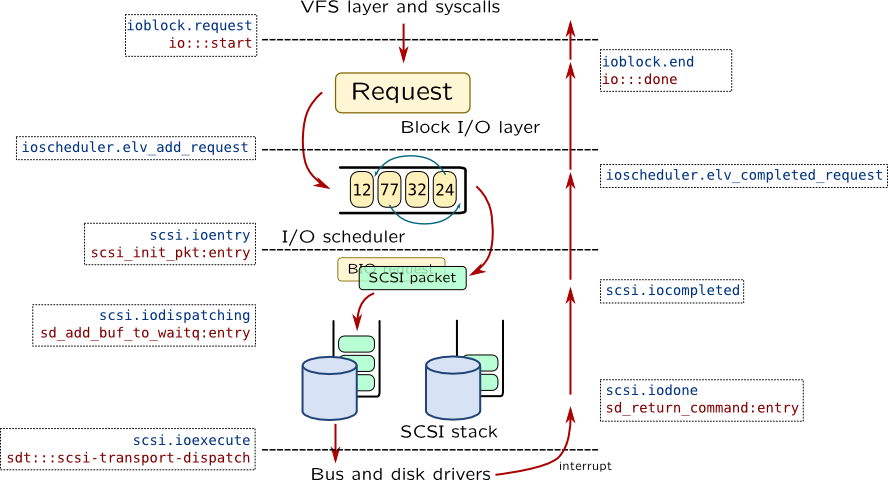
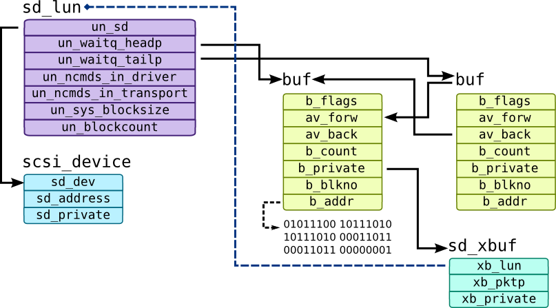
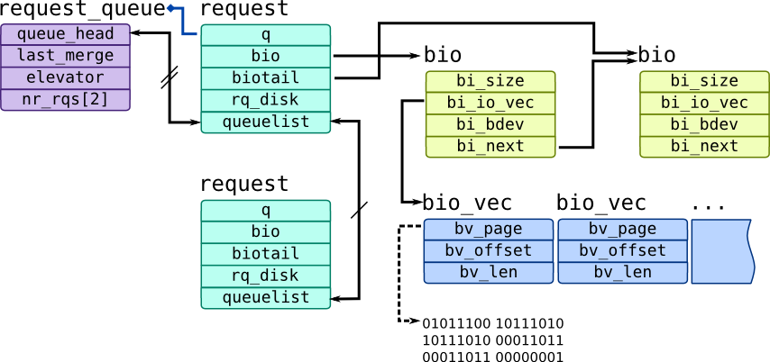

Block Input-Output
When request is handled by Virtual File System, and if it needs to be handled by underlying block device, VFS creates a request to Block Input-Output subsystem. Operating system in this case either fetches new page from a disk to a page cache or writes dirty page onto disk. Disks are usually referred to as block devices because you can access them by using blocks of fixed size: 512 bytes which is disk sector (not to mention disks with advanced format or SSDs). On the other hand, character devices like terminal emulator pass data byte by byte while network devices might have any length of network packet.
BIO top layer is traceable through io provider in DTrace:
# dtrace -qn '
io:::start
/args[0]->b_flags & B_READ/ {
printf("io dev: %s file: %s blkno: %u count: %d \n",
args[1]->dev_pathname, args[2]->fi_pathname,
args[0]->b_lblkno, args[0]->b_bcount);
}' -c "dd if=/dev/dsk/c2t0d1p0 of=/dev/null count=10"
If you check function name of that probe, you may see that it is handled by bdev_strategy() kernel function which has only one argument of type struct buf. That buffer represents a single request to a block subsystem and passed as arg0 to io:::start probe and then translated to a bufinfo_t structure which is considered stable. DTrace also supplies information about block device and file name in args[1] and args[2].
Linux has similar architecture: it has struct bio which represents single request to block subsystem and generic_make_request() function (which, however, has alternatives) which passes bio structure to device queues. SystemTap tapset ioblock provides access to BIO probes:
# stap -e '
probe ioblock.request {
if(bio_rw_num(rw) != BIO_READ)
next;
printf("io dev: %s inode: %d blkno: %u count: %d \n",
devname, ino, sector, size);
}' -c "dd if=/dev/sda of=/dev/null count=10"
In these examples we have traced only read requests.
Here are description of buf structure from Solaris and bio structure from Linux:
| Field description |
bufinfo_t translator or struct buf |
struct bio |
| Request flags |
b_flags |
bi_flags |
| Read or write |
flags B_WRITE, B_READ in b_flags |
bi_rw, see also functions bio_rw_num() and bio_rw_str() |
| Number of bytes |
b_bcount |
bi_size |
| Id of block |
b_blkno, b_lblkno |
bi_sector |
| Request finish callback |
b_iodone |
bi_end_io |
| Device identifiers |
b_edev, b_dip |
bi_bdev |
| Pointer to data |
b_addr or b_pages (only in buf when B_PAGEIO flag is set) |
See note below |
| Pointer to file descriptor |
b_file (only in buf) |
|
struct bio in Linux contains table bi_io_vec, where each element contains pointer to a page bv_page, length of data bv_len and offset inside page bv_offset. Field bi_vcnt shows how many structures of that type is in vector while current index is kept in bi_idx.Every
bio structure can contain many files related to it (i.e. when I/O scheduler merges requests for adjacent pages). You can find file inode by accessing bv_page which points to a page-cache page, which will refer inode through its mapping.
When BIO request is created it is passed to scheduler which re-orders requests in a way which will require fewer movement of disk heads (this improves HDD access time). This subystem plays important role in Linux which implements a lot of different schedulers, including CFQ (used by default in many cases), Deadline and NOOP (doesn't perform scheduling at all). They are traceable with ioscheduler tapset. Solaris doesn't have centralized place for that: ZFS uses VDEV queue mechanism, while the only unifying algorithm is lift sorter which is implemented in sd_add_buf_to_waitq().
After scheduling BIO layer passes request to a device level:

Both Solaris and Linux use SCSI protocol as unified way to represent low-level device access. SCSI devices can be stacked, i.e. with device mapper in Linux or MPxIO in Solaris, but we will have only single layer in our examples. In any case, this subsystem is called SCSI stack. All requests in SCSI stack are translated to SCSI packets (which can be translated to ATA commands or passed as is to SAS devices). SCSI packet is handled in a several steps:
| Action | Solaris | Linux |
| New instance of SCSI packet is created |
scsi_init_pkt() |
scsi.ioentry |
| SCSI packet is dispatched on queue |
sd_add_buf_to_waitq() |
scsi.iodispatching |
| SCSI packet is passed to low-level driver |
sdt::scsi-transport-dispatchscsi_transport() |
scsi.ioexecute |
| Low-level driver generates interrupt when SCSI packet is finished |
sd_return_command() |
scsi.iocompletedscsi.iodone |
scsi.ioexecute can be not fired for all SCSI packets: usually bus or disk driver puts request to internal queue and processes it independently from SCSI stack.sd prefix in this example. They are from sd driver which represents SCSI disk. There is also ssd driver which is used for FC disks -- it is based on sd driver, but all functions in it are using ssd prefix, i.e. ssd_return_command.
In Solaris each SCSI LUN has a corresponding sd_lun structure which keeps queue of buffers in doubly-linked list referenced by un_waitq_headp and un_waitq_tailp pointers. When new command is passed to SCSI stack, un_ncmds_in_driver is increased and when packet is dispatched to transport, un_ncmds_in_transport is increased. They are decreased when SCSI packet is discarded or when it was successfully processed and interrupt is fired to notify OS about that. SCSI stack uses b_private field to keep sd_xbuf structure that keeps reference to SCSI packet through xb_pktp pointer.
Following script traces block I/O layer and SCSI stack (sd driver in particular) in Solaris:
#!/usr/sbin/dtrace -qCs
#pragma D option nspec=1024
#pragma D option dynvarsize=4m
int specs[uint64_t];
uint64_t timestamps[uint64_t];
#define BUF_SPEC_INDEX(bp) \
((uint64_t) bp) ^ ((struct buf*) bp)->_b_blkno._f
#define BUF_SPECULATE(bp) \
speculate(specs[BUF_SPEC_INDEX(bp)])
#define PROBE_PRINT(probe, bp) \
printf("%-24s %p cpu%d %+llu\n", probe, bp, cpu, \
(unsigned long long) (timestamp - \
timestamps[BUF_SPEC_INDEX(bp)]))
#define PROC_PRINT() \
printf("\tPROC: %d/%d %s\n", pid, tid, execname);
#define BUF_PRINT_INFO(buf) \
printf("\tBUF flags: %s %x count: %d blkno: %d comp: ", \
(buf->b_flags & B_WRITE)? "W" : "R", buf->b_flags, \
buf->b_bcount, buf->b_blkno); \
sym((uintptr_t) buf->b_iodone); printf("\n")
#define DEV_PRINT_INFO(dev) \
printf("\tDEV %d,%d %s\n", dev->dev_major, dev->dev_minor, \
dev->dev_name);
#define FILE_PRINT_INFO(file) \
printf("\tFILE %s+%d\n", file->fi_pathname, file->fi_offset);
#define PTR_TO_SCSIPKT(pkt) ((struct scsi_pkt*) pkt)
#define SCSIPKT_TO_BP(pkt) ((struct buf*) PTR_TO_SCSIPKT(pkt)->pkt_private)
#define SCSIPKT_PRINT_INFO(pkt) \
printf("\tSCSI PKT flags: %x state: %x comp: ", \
pkt->pkt_flags, pkt->pkt_state); \
sym((uintptr_t) pkt->pkt_comp); printf("\n")
#define SCSI_PRINT_PATH(un) \
printf("\tDEV %s\n", ddi_pathname(((struct sd_lun*) un)->un_sd->sd_dev, 0))
io:::start {
specs[BUF_SPEC_INDEX(arg0)] = speculation();
timestamps[BUF_SPEC_INDEX(arg0)] = timestamp;
}
io:::start {
BUF_SPECULATE(arg0);
printf("---------------------\n");
PROBE_PRINT("io-start", arg0);
PROC_PRINT();
BUF_PRINT_INFO(args[0]);
DEV_PRINT_INFO(args[1]);
FILE_PRINT_INFO(args[2]);
}
*sd_initpkt_for_buf:entry {
self->bp = arg0;
}
*sd_initpkt_for_buf:return
/arg1 != 0/ {
BUF_SPECULATE(self->bp);
PROBE_PRINT("ALLOCATION FAILED", self->bp);
}
*sd_initpkt_for_buf:return
/arg1 != 0/ {
commit(specs[BUF_SPEC_INDEX(self->bp)]);
}
*sdstrategy:entry {
BUF_SPECULATE(arg0);
PROBE_PRINT(probefunc, arg0);
}
*sd_add_buf_to_waitq:entry {
BUF_SPECULATE(arg1);
PROBE_PRINT(probefunc, arg1);
SCSI_PRINT_PATH(arg0);
}
scsi-transport-dispatch {
BUF_SPECULATE(arg0);
PROBE_PRINT(probename, arg0);
}
scsi_transport:entry {
this->bpp = (uint64_t) SCSIPKT_TO_BP(arg0);
BUF_SPECULATE(this->bpp);
PROBE_PRINT(probefunc, this->bpp);
SCSIPKT_PRINT_INFO(PTR_TO_SCSIPKT(arg0));
}
*sdintr:entry {
self->bpp = (uint64_t) SCSIPKT_TO_BP(arg0);
BUF_SPECULATE(self->bpp);
PROBE_PRINT(probefunc, self->bpp);
SCSIPKT_PRINT_INFO(PTR_TO_SCSIPKT(arg0));
}
io:::done {
BUF_SPECULATE(arg0);
PROBE_PRINT("io-done", arg0);
BUF_PRINT_INFO(args[0]);
}
io:::done {
commit(specs[BUF_SPEC_INDEX(arg0)]);
specs[BUF_SPEC_INDEX(arg0)] = 0;
}
It saves history of all I/O stages into a speculation which is committed when operation is finished. Note that due to the fact that speculation has one buffer per processor output may be garbled when interrupt was delivered to a processor other than processor that initiated request and sdintr is called on it.
Here is an example output for script:
io-start ffffc100040c4300 cpu0 2261
PROC: 1215/1 dd
BUF flags: R 200061 count: 512 blkno: 0 comp: 0x0
DEV 208,192 sd
FILE +-1
sd_add_buf_to_waitq ffffc100040c4300 cpu0 11549
scsi-transport-dispatch ffffc100040c4300 cpu0 18332
scsi_transport ffffc100040c4300 cpu0 21136
SCSI PKT flags: 14000 state: 0 comp: sd`sdintr
sdintr ffffc100040c4300 cpu0 565121
SCSI PKT flags: 14000 state: 1f comp: sd`sdintr
io-done ffffc100040c4300 cpu0 597642
BUF flags: R 2200061 count: 512 blkno: 0 comp: 0x0
Each stage of request (marked bold) contains its name, address of buf pointer and time since request creation in nanoseconds. In our case largest difference is between scsi_transport and sdintr which is about half a second. It can be simply explained: actual I/O was performed between these stages, and it is slower than processor operations.
SCSI stack also uses callback mechanism to notify request initiators when it is finished. In our case lower-level driver had used sdintr callback while b_iodone field wasn't filled. It is more likely that caller used biowait() routine to wait for request completion.
Like we said before, Linux has intermediate layer called a scheduler which can re-order requests. Due to that, BIO layer maintains generic layer of block device queues which are represented by struct request_queue which holds requests as struct request instances:

Each request may have multiple bio requests which are kept as linked list. New requests are submitted through blk_queue_bio() kernel function which will either create a new request using get_request() function for it or merge it with already existing request.
Here are example script for Linux which traces BIO layer and SCSI stack:
#!/usr/bin/stap
global rqs, bio2rq, specs, times;
function probe_print:string(bio:long) {
return sprintf("%-24s %p cpu%d %u\n", pn(), bio, cpu(),
gettimeofday_ns() - times[bio2rq[bio]]);
}
function rq_probe_print(rq:long, bio:long) {
if(bio == 0)
bio = @cast(rq, "struct request")->bio;
return sprintf("%-24s %p %p cpu%d %u\n", pn(), bio, rq, cpu(),
gettimeofday_ns() - times[bio]);
}
function proc_print:string() {
return sprintf("\tPROC: %d/%d %s\n", pid(), tid(), execname());
}
function handle_bio2rq(bio:long, rq:long) {
if(specs[rq] == 0) {
specs[rq] = speculation();
}
rqs[rq] += 1;
bio2rq[bio] = rq;
speculate(specs[rq],
rq_probe_print(rq, bio)
.proc_print()
.sprintf("\tBUF flags: %s %x count: %d blkno: %d comp: %s\n",
bio_rw_str(@cast(bio, "bio")->bi_rw), @cast(bio, "bio")->bi_flags,
@cast(bio, "bio")->bi_size, @cast(bio, "bio")->bi_sector,
symname(@cast(bio, "bio")->bi_end_io))
.sprintf("\tDEV %d,%d\tINO %d\n", MAJOR(@cast(bio, "bio")->bi_bdev->bd_dev),
MINOR(@cast(bio, "bio")->bi_bdev->bd_dev), __bio_ino(bio)));
}
probe ioblock.request {
times[$bio] = gettimeofday_ns();
}
probe kernel.function("bio_attempt_front_merge").return,
kernel.function("bio_attempt_back_merge").return {
if($return) {
/* BIO was merged with request */
rq = $req;
bio = $bio;
if(bio == 0) next;
handle_bio2rq(bio, rq);
}
}
probe kernel.function("get_request").return {
rq = $return;
bio = $bio;
if(bio == 0) next;
/* BIO were created a new request */
handle_bio2rq(bio, rq);
}
probe ioscheduler.elv_add_request, ioscheduler.elv_completed_request {
if(rq == 0 || specs[rq] == 0) next;
speculate(specs[rq],
rq_probe_print(rq, 0)
.sprintf("\tDEV %d,%d\n", disk_major, disk_minor));
}
probe scsi.ioentry, scsi.iodone, scsi.iocompleted, scsi.iodispatching {
if(req_addr == 0 || specs[req_addr] == 0) next;
speculate(specs[req_addr],
rq_probe_print(req_addr, 0));
}
probe scsi.iodispatching {
if(req_addr == 0 || specs[req_addr] == 0) next;
speculate(specs[req_addr],
rq_probe_print(req_addr, 0)
.sprintf("\tSCSI DEV %d:%d:%d:%d %s\n",
host_no, channel, lun, dev_id, device_state_str)
.sprintf("\tSCSI PKT flags: %x comp: %s\n",
@cast(req_addr, "struct request")->cmd_flags,
symname($cmd->scsi_done)));
}
probe ioblock.end {
bio = $bio;
rq = bio2rq[bio];
delete bio2rq[bio];
delete times[bio];
rqs[rq] -= 1;
if(rqs[rq] == 0) {
speculate(specs[rq], probe_print(bio));
speculate(specs[rq], "----------\n");
commit(specs[rq]);
delete specs[rq];
}
}
Script example outputs are shown below:
kernel.function("get_request@block/blk-core.c:1074").return 0xffff880039ff1500 0xffff88001d8fea00 cpu0 4490
PROC: 16668/16674 tsexperiment
BUF flags: R f000000000000001 count: 4096 blkno: 779728 comp: end_bio_bh_io_sync
DEV 8,0 INO 0
ioscheduler.elv_add_request 0xffff880039ff1500 0xffff88001d8fea00 cpu0 15830
DEV 8,0
scsi.ioentry 0xffff880039ff1500 0xffff88001d8fea00 cpu0 19847
scsi.iodispatching 0xffff880039ff1500 0xffff88001d8fea00 cpu0 25744
SCSI DEV 2:0:0:0 RUNNING
SCSI PKT flags: 122c8000 comp: 0x0
scsi.iodispatching 0xffff880039ff1500 0xffff88001d8fea00 cpu0 29882
scsi.iodone 0xffff880039ff1500 0xffff88001d8fea00 cpu1 4368018
scsi.iocompleted 0xffff880039ff1500 0xffff88001d8fea00 cpu0 4458073
ioblock.end 0xffff880039ff1500 cpu0 1431980041275998676
Unlike Solaris, it shows to pointers for each stage: one for bio structure and one for request. Note that we didn't use ioblock.request in our example. That is because we wanted to distinguish merged and alone requests which can be done only with function boundary tracing.